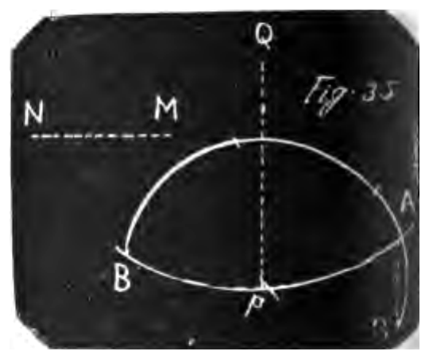
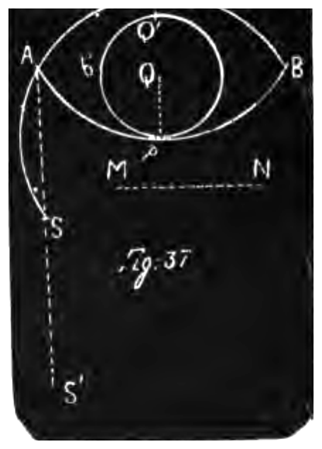
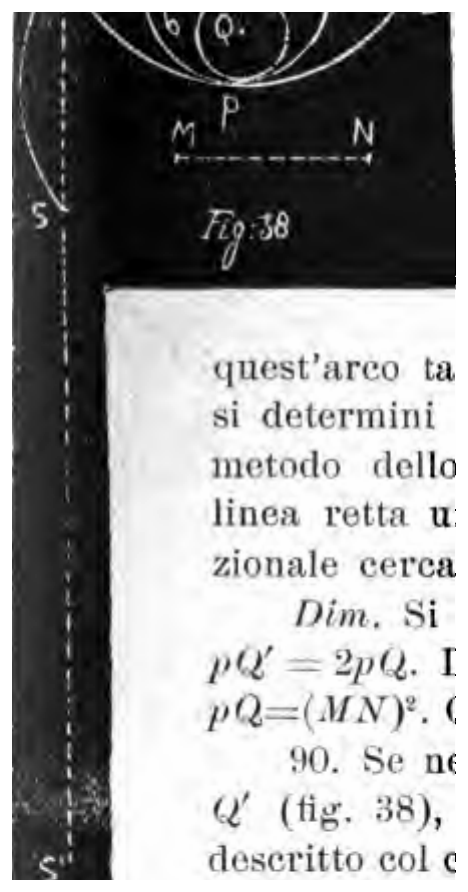

§§ 86–92: Third Proportional & Iterative Doubling¶
BOOK FIVE
OF PROPORTIONAL DISTANCES
86. Prob. To find a third proportional to the two distances \(Qp, MN\) (fig. 35), of which the first \(Qp\) is greater than the second \(MN\).


Sol. With center \(Q\) and radius \(Qp\), describe an indefinite arc \(ApB\). With center \(p\) and radius \(MN\), describe the semicircumference \(BAS\). Then \(AS\) will be the third proportional.
Dem. By the Lemma of § 22, \(AS \cdot pQ = (Ap)^2\). Therefore \(AS \cdot pQ = (MN)^2\). Hence (VI.17) \(pQ : MN :: MN : AS\).
87. To find a third proportional to the two distances \(Qp, MN\) (fig. 36), of which the first is less than the second, yet greater than half of it.
Obs. We shall perceive that \(Qp\) is greater than half of \(MN\) if the two circles described with centers \(Q\) and \(p\) (which are the endpoints of the first distance) and with radii \(Qp\) and \(MN\) (which are the two given distances) intersect one another as in the figure.
f. 0072 · p. 47Sol. It is the same as the preceding, applied to fig. 36.

Dem. It is the same as the preceding.
88. If the circle \(pbQ'\) described with center \(Q\) and radius \(Qp\) should not intersect at any point with the circle described with center \(p\) and radius \(MN\), as in fig. 37, the following problem will serve.
89. Prob. To find a third proportional to the two distances (fig. 37) \(Qp, MN\), of which the first is less than half the second.


Sol. With center \(p\) and radius \(MN\), describe an indefinite arc \(BAS\). With center \(Q\) and radius \(Qp\), describe the semicircumference \(pbQ'\) (§ 64). With center \(Q'\) and radius \(Q'p\), describe an indefinite arc. If this arc cuts the arc \(BAS\) at two points \(B\) and \(A\), determine the semicircumference \(BAS'\) (§ 64). By the method of the same § 64, add to \(AS'\) in a straight line an equal \(S'S\). Then \(AS\) will be the required third proportional.
Dem. We have (§ 22) \(AS' \cdot pQ' = (Ap)^2 = (MN)^2\). But \(pQ' = 2pQ\). Therefore \(2AS' \cdot pQ = (MN)^2\); that is, \(AS \cdot pQ = (MN)^2\). Hence (I.17) \(pQ : MN :: MN : AS\).


90. If not even the arc \(pcQ''\) described with center \(Q'\) (fig. 38) and radius \(Q'p\) should cut the arc \(BAS\) described with center \(p\) and radius \(MN\), determine the semicircumference \(pcQ''\); with center \(Q''\) and radius
f. 0073 · p. 48\(Q''p\) describe an indefinite arc. If this cuts the arc \(BAS\) at two points \(A\) and \(B\), determine the semicircumference \(BAS''\) (§ 64). Quadruple \(AS''\) (§ 65), and let \(AS = 4AS''\). This will be the required third proportional.
Dem. Because we have (§ 22) \(AS' \cdot pQ'' = (Ap)^2 = (MN)^2\). Hence \(4AS' \cdot pQ = (MN)^2 = AS \cdot pQ\). Hence (VI.17) \(pQ : MN :: MN : AS\).
91. In the same manner we would proceed further if not even the distance \(Q''p\) were greater than half of \(MN\); namely, we would take a distance double that, and octuple of \(Qp\), and octuple the \(AS''\) that would be determined thereby. This octuple distance of \(AS'\) would be the required third proportional; and so on.
The demonstration is like the preceding ones.
92. Even in the case where the first distance \(Qp\) should indeed be greater than half the second \(MN\), but by a little, it will be advantageous to double it, so that the intersections of the two circles may be made at angles not so acute, but closer to a right angle (§ 9).